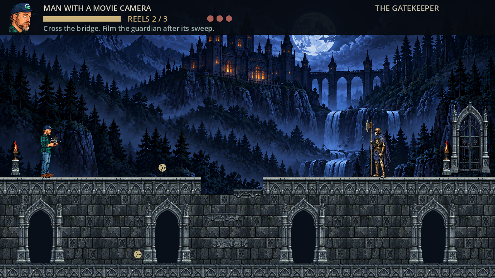

One room. Three resolutions.
Switch between real game captures at the same display size to compare detail. The room layout, character proportions and source artwork are the same. Open a playable version to compare motion and responsiveness.

720p · 1280 × 720 native render
For the fairest comparison, use the same screen and orientation. In each playable version, choose Full screen → Fill screen. On iPhone, use Share → Add to Home Screen and launch the icon to view the game without Safari’s browser bars. An internet connection is required.
Higher resolution reveals more of the existing artwork; no new artwork or animation has been added for this comparison. The physical iPhone performance comparison is still yours to test. R5 and the original previews remain unchanged.